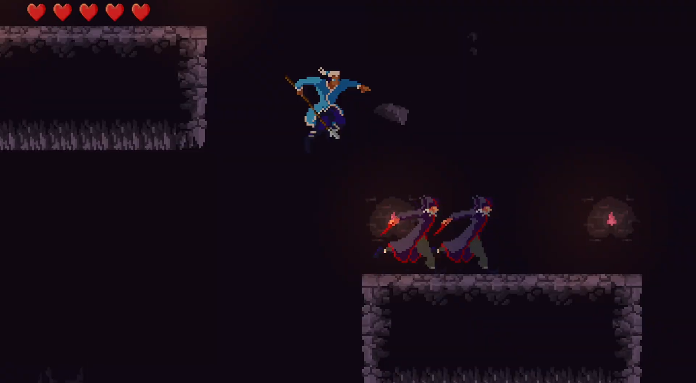
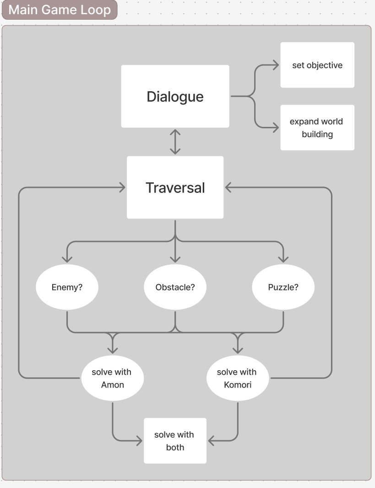
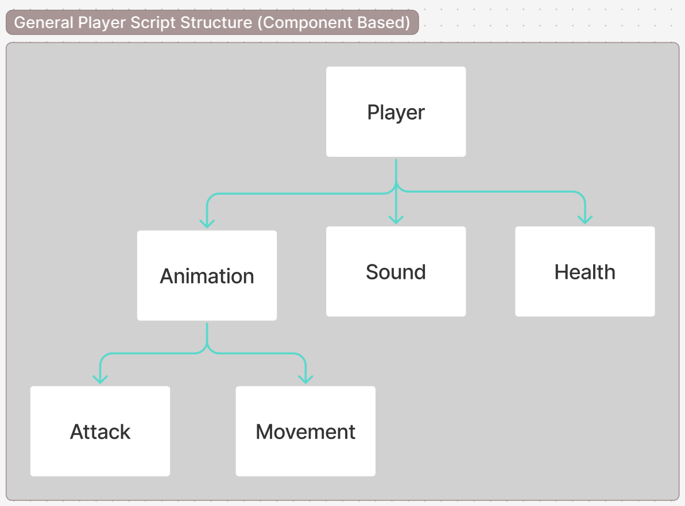
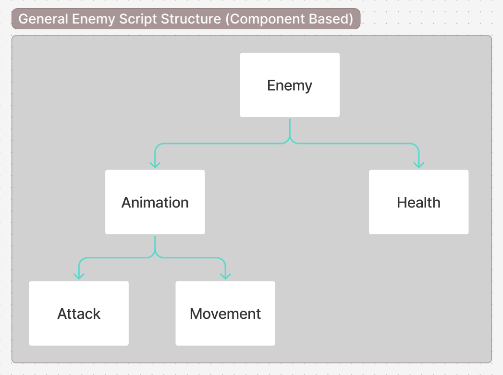
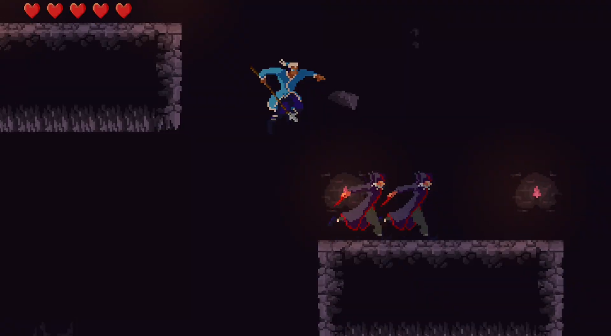
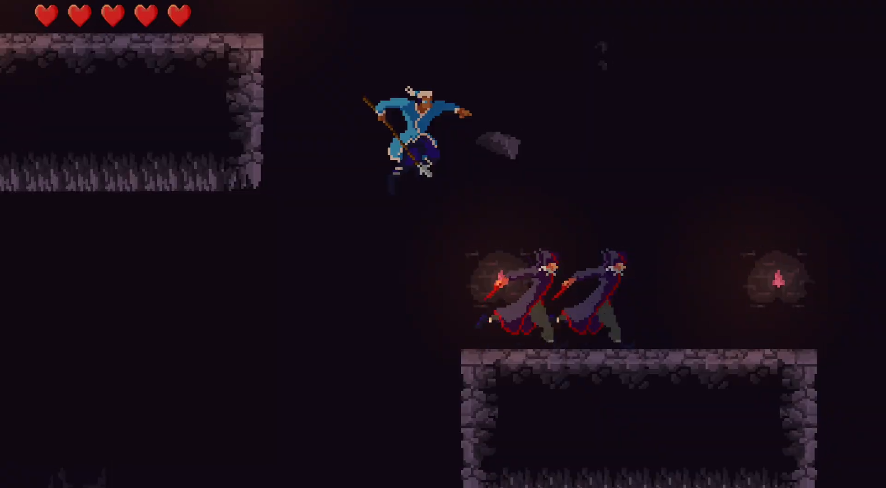

Description: In Dogs With No Cage, swap between Komori and Amon to solve puzzles, fight enemies, and discover hidden locations around the world of Naraka. Explore the narrative through fully voice-acted dialogue scenes and learn more about Naraka through its inhabitants, both in the upper and lower cities.
DWNC is a game I have been working on for around 10 months. It currently features a tutorial level to get the player acclimated to the controls, and a sandbox level to allow the player to explore the different mechanics of the game. The game currently features a rudimentary combat system, a dialogue system, and platforming challenges.
Trailer:
Screenshots:

Design Documents:
Code Diagrams:
This diagram is used to display the two main components of the core gameplay loop: dialogue and traversal. These two systems feed into each other
through puzzles, enemies, and obstacles. After solving one of these interactions with Komori or Amon, or both, the player will be directed back into a dialogue and thus the gameloop continues.

This diagram displays how I seperated the scripts revolving around my player into animation based scripts and data driven scripts. These scripts utilize components, so no two scripts should rely on another. This means that I can add new scripts without the worry of damaging the code in another script.

The diagram for the enemy's code structure is very similar to the player's code structure. The only difference, at this current juncture, is that the sound code is located in the animation script rather than its own seperate script. This will be changed as more enemies are added to the game.

This diagram depicts the flow of how dialogue works in DWNC. When a dialogue is triggered in a level, the data (reactions, the names of characters, etc.) of that dialogue sequence is sent to the dialogue manager. The dialogue manager takes that data, stores it in a queue, and pops that data from the queue to be displayed on a Unity canvas.


 
